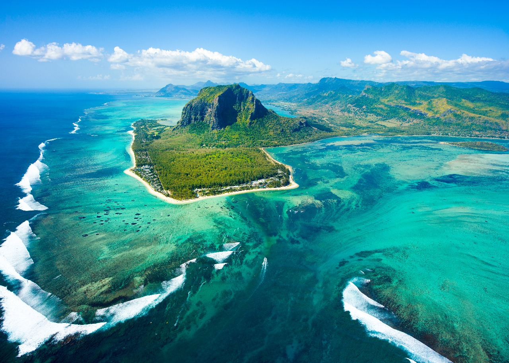
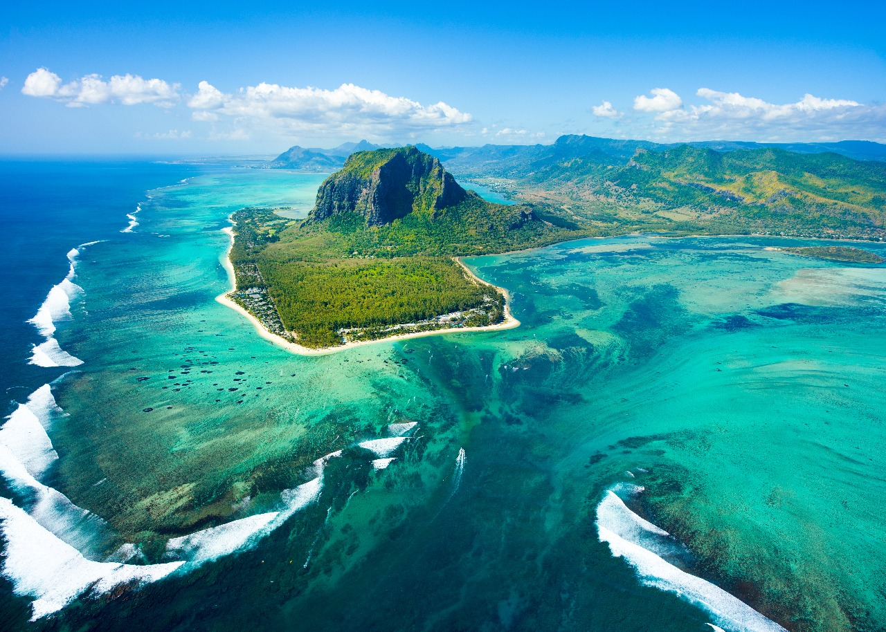

Underwater Waterfall
 

Location: Mauritius island
Type: Waterfall
Area: 11,500 feet(3,505 meters)
Fact: Straight down from the Greenland Sea into the Irminger Sea, carrying around 175 million cubic feet (5 million cubic meters) of water per second.
Underwater Waterfall, Mauritius Island